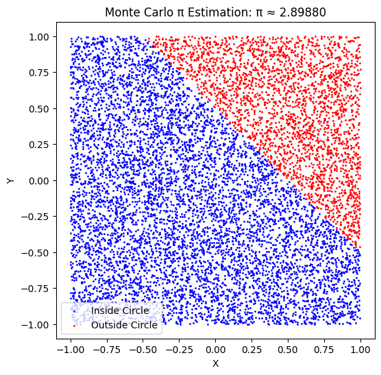

Problem 2
markdown
Estimating Pi using Monte Carlo Methods
Motivation
Monte Carlo simulations are a powerful class of computational techniques that use randomness to solve problems or estimate values. One of the most elegant applications of Monte Carlo methods is estimating the value of \( \pi \) through geometric probability. By randomly generating points and analyzing their positions relative to a geometric shape, we can approximate \( \pi \) in an intuitive and visually engaging way.
This problem connects fundamental concepts of probability, geometry, and numerical computation. It also provides a gateway to understanding how randomness can be harnessed to solve complex problems in physics, finance, and computer science. The Monte Carlo approach to \( \pi \) estimation highlights the versatility and simplicity of this method while offering practical insights into convergence rates and computational efficiency.
Task
Part 1: Estimating \( \pi \) Using a Circle
1. Theoretical Foundation:
- Explain how the ratio of points inside a circle to the total number of points in a square can be used to estimate \( \pi \).
- Derive the formula: [ \pi \approx 4 \times \left(\frac{\text{points inside the circle}}{\text{total points}}\right) ] for a unit circle.
2. Simulation:
- Generate random points in a 2D square bounding a unit circle.
- Count the number of points falling inside the circle.
- Estimate \( \pi \) based on the ratio of points inside the circle to the total points.
3. Visualization:
- Create a plot showing the randomly generated points, distinguishing those inside and outside the circle.
4. Analysis:
- Investigate how the accuracy of the estimate improves as the number of points increases.
- Discuss the convergence rate and computational considerations for this method.
Part 2: Estimating \( \pi \) Using Buffon's Needle
1. Theoretical Foundation:
- Describe Buffon’s Needle problem, where \( \pi \) can be estimated based on the probability of a needle crossing parallel lines on a plane.
- Derive the formula: [ \pi \approx \frac{2 \times \text{needle length} \times \text{number of throws}}{\text{distance between lines} \times \text{number of crossings}} ]
2. Simulation:
- Simulate the random dropping of a needle on a plane with parallel lines.
- Count the number of times the needle crosses a line.
- Estimate \( \pi \) based on the derived formula.
3. Visualization:
- Create a graphical representation of the simulation, showing the needle positions relative to the lines.
4. Analysis:
- Explore how the number of needle drops affects the estimate’s accuracy.
- Compare the convergence rate of this method to the circle-based approach.
Deliverables
- A Markdown document with:
- Clear explanations of the methods and formulas.
-
A discussion of theoretical foundations and results.
-
Python scripts or notebooks implementing the simulations, including:
- Code for the circle-based Monte Carlo method.
-
Code for the Buffon's Needle method.
-
Graphical outputs:
- Plots showing random points for the circle-based method.
-
Visualizations of needle positions for Buffon's Needle.
-
Analysis:
- Tables or graphs showing the convergence of estimated \( \pi \) as a function of the number of iterations for both methods.
- A comparison of the methods in terms of accuracy and computational efficiency.
Hints and Resources
- Use Python libraries such as NumPy for random number generation and Matplotlib for visualization.
- For the circle-based method, ensure the random points are uniformly distributed within the square.
- For Buffon’s Needle, pay attention to geometric constraints, such as the relationship between the needle length and the distance between lines.
- Start with a small number of iterations to validate the implementation, then increase the sample size to observe convergence.
import numpy as np
import matplotlib.pyplot as plt
def monte_carlo_pi(num_points=10000):
inside_circle = 0
x_inside, y_inside = [], []
x_outside, y_outside = [], []
for _ in range(num_points):
x, y = np.random.uniform(-1, 1, 2)
if x*2 + y*2 <= 1:
inside_circle += 1
x_inside.append(x)
y_inside.append(y)
else:
x_outside.append(x)
y_outside.append(y)
pi_estimate = 4 * (inside_circle / num_points)
plt.figure(figsize=(6,6))
plt.scatter(x_inside, y_inside, color='blue', s=1, label='Inside Circle')
plt.scatter(x_outside, y_outside, color='red', s=1, label='Outside Circle')
plt.xlabel("X")
plt.ylabel("Y")
plt.title(f"Monte Carlo π Estimation: π ≈ {pi_estimate:.5f}")
plt.legend()
plt.show()
return pi_estimate
def buffon_pi(num_throws=10000, needle_length=1, line_spacing=2):
crossings = 0
for _ in range(num_throws):
center = np.random.uniform(0, line_spacing / 2)
angle = np.random.uniform(0, np.pi)
if center <= (needle_length / 2) * np.sin(angle):
crossings += 1
if crossings == 0:
return None # Avoid division by zero
pi_estimate = (2 * needle_length * num_throws) / (line_spacing * crossings)
return pi_estimate
# Run simulations
print("Monte Carlo method estimated π:", monte_carlo_pi(10000))
print("Buffon's Needle method estimated π:", buffon_pi(10000))
